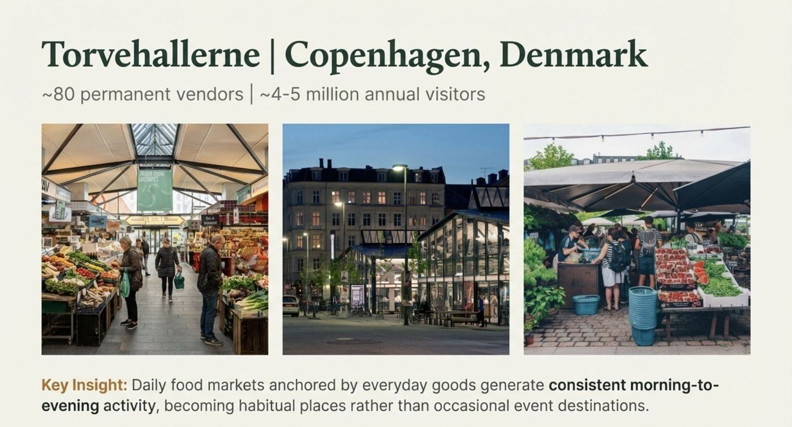

Ten cases, three capital tiers
Ordered by the capital required to start. The pattern that matters: the cheapest interventions often carry the highest return on the dollar, and they are what make the expensive interventions financeable later.
Melbourne Laneways
Active-frontage policy paired with residential repopulation. The city legislated street life into being, then let it compound.
Laneways went from 8% to 92% active (1994-2004); a measured +10% in walking connectivity has been associated with roughly +$2.1B/yr to the local economy.
Tactical Urbanism
Low-cost, temporary demonstrations - paint, planters, pop-ups - that test an idea in public before permanent capital is committed.
Pedestrianization pilots have produced documented retail-sales lifts that justified the permanent build.

Torvehallerne + Reffen
A permanent market hall and a container food park - one an identity anchor, the other a low-rent incubator for new operators.
 Wikimedia Commons
Wikimedia CommonsChattanooga Riverfront
A nonprofit delivery vehicle (River City Company) led a public riverfront investment that pulled private capital in behind it.
River City Company leveraged $12M of seed capital into roughly $1.5B of private investment.
 Wikimedia Commons
Wikimedia CommonsMedellín Social Urbanism
Equity-first investment - Metrocable transit and library parks placed in the hardest-hit neighborhoods first.
Caution: long-term maintenance and displacement pressures must be planned for.
.jpg) Wikimedia Commons
Wikimedia CommonsBilbao / Guggenheim
The canonical culture-led flagship. Strong returns - but the lesson is the fine print.
Key lesson: it worked only as one move inside a larger regional plan, not as "just add art."
22@ Barcelona
A zoning-led innovation district that converted industrial land to a dense jobs cluster.
Caution: fewer than 25K jobs were net-new; gentrification and heritage concerns followed.
.jpg) Wikimedia Commons
Wikimedia CommonsPearl District
A North American model for streetcar-led, brownfield-to-neighborhood transformation delivered by a consortium.
Creative Placemaking
The connective tissue - the method that ties culture to real estate and speeds approvals and lease-up.
Postcode 3000
The residential repopulation lever - put rooftops over downtown first, and the shops follow the residents.